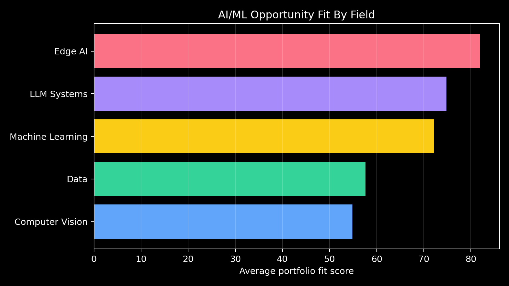
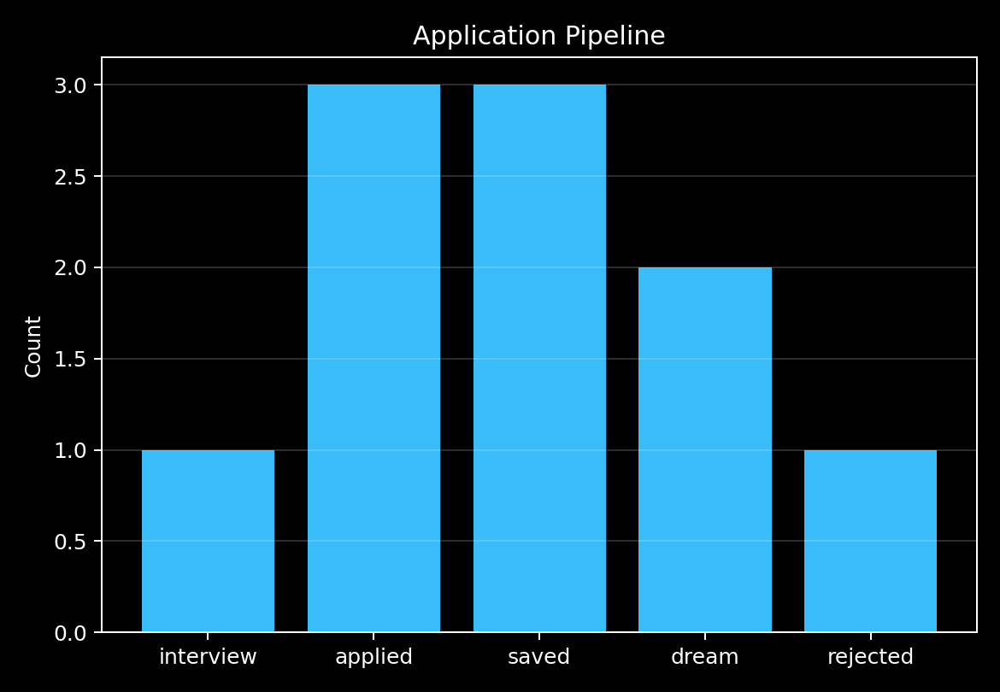

94.2
Ericsson
AI Engineer Intern
LLM Systems / Stockholm / interview
Matched: agents, git, llm api, python, rag, sql
Next signals:
A SQLite-backed ranking system that connects an AI/ML technical profile to internship opportunities using skill overlap, role relevance, application stage, and explainable scoring.
AI Engineer Intern
LLM Systems / Stockholm / interview
Matched: agents, git, llm api, python, rag, sql
Next signals:
Edge AI Intern
Edge AI / Gothenburg / applied
Matched: c, edge ai, optimization, python, tensorflow, tflite
Next signals:
Edge ML Intern
Edge AI / Remote / saved
Matched: c, edge ai, python, tensorflow, tflite
Next signals: hardware optimization
ML Intern
Machine Learning / Stockholm / applied
Matched: machine learning, optimization, python
Next signals: data pipelines
Agents Intern
LLM Systems / Remote / dream
Matched: agents, mcp, python, rag
Next signals: open source, transformers
Medical AI Intern
Computer Vision / Linkoping / saved
Matched: computer vision, data analysis, python, tensorflow
Next signals: medical imaging

